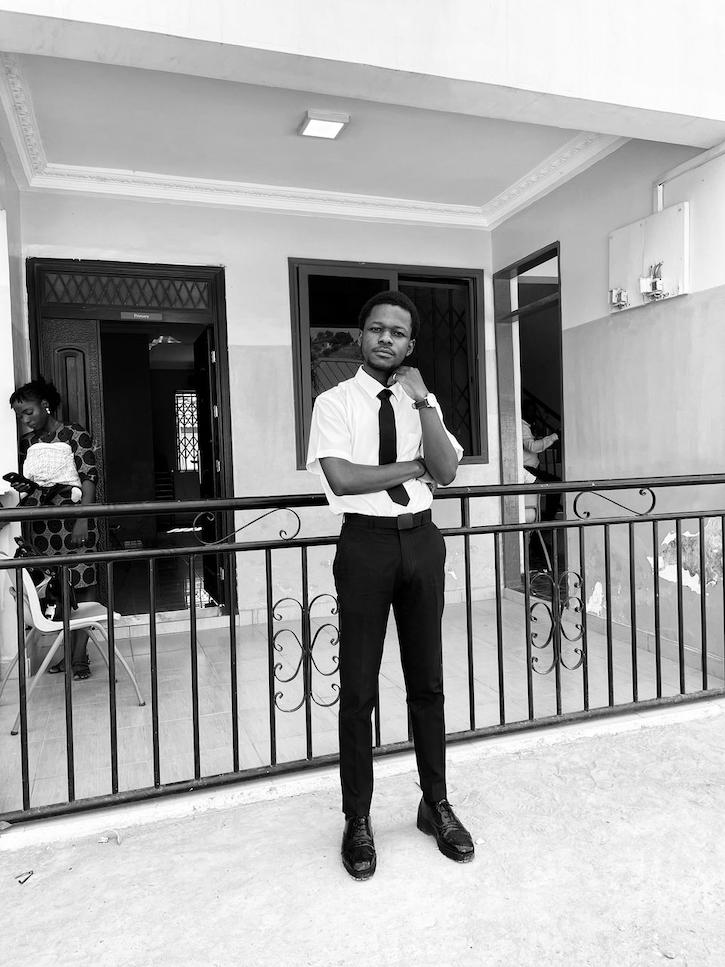

Awuah Dennis | WDD 130
Welcome to my personal website! My Name is Awuah Dennis, I am a student at BYU Pathway, currently, studying Web Design and Development. I'm 25 years of age, I love watching football. The football club that I support is Real Madrid. I love listening to music and watching movies during my free times. I have 5 siblings. I'm from Accra, Ghana.
My goal is to become a great and innovative website designer. I'm really happy to be part of this class, and I look forward to have the experience as possible as I can.My favorite color is blue, and I love to travel. I have been to a few countries in Africa, including Nigeria, Togo, and Benin.
I hope to visit more countries in the future.My favorite food is Jollof rice, a popular dish in West Africa. I also enjoy eating pizza and burgers. I love trying new foods and exploring different cuisines. In my free time, I enjoy playing video games, reading books, and spending time with my family and friends. I also love to go hiking and explore nature. I believe that spending time outdoors is a great way to relax